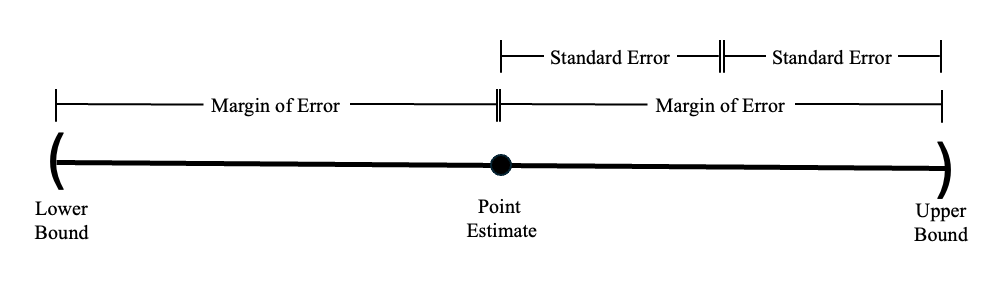
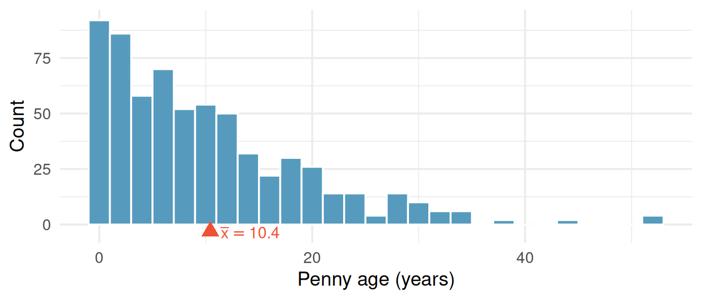
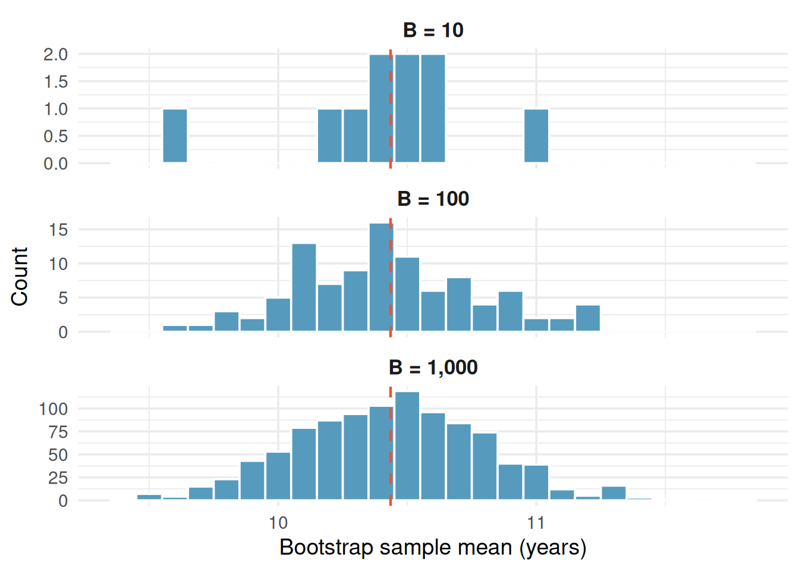
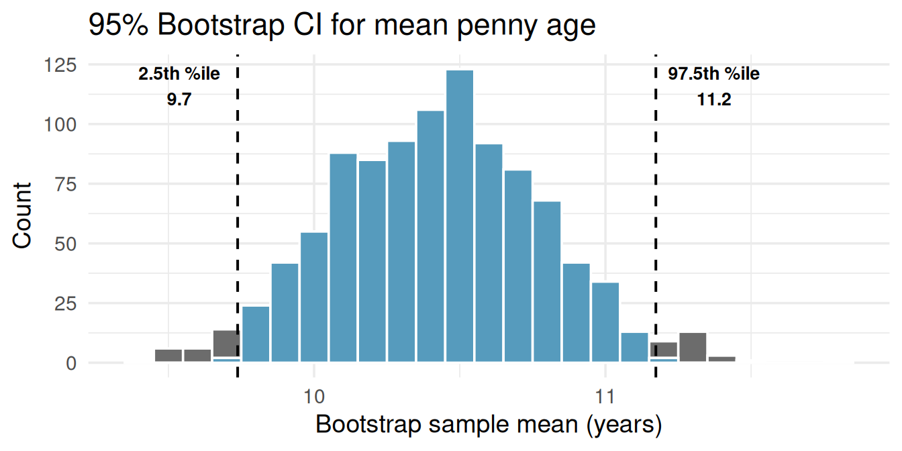
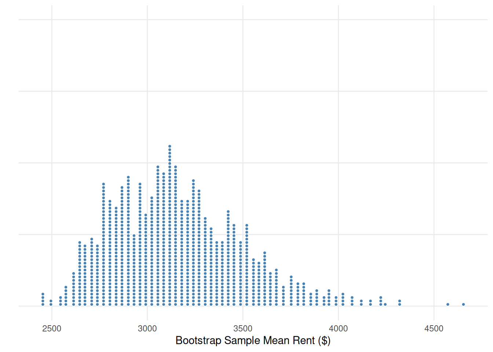
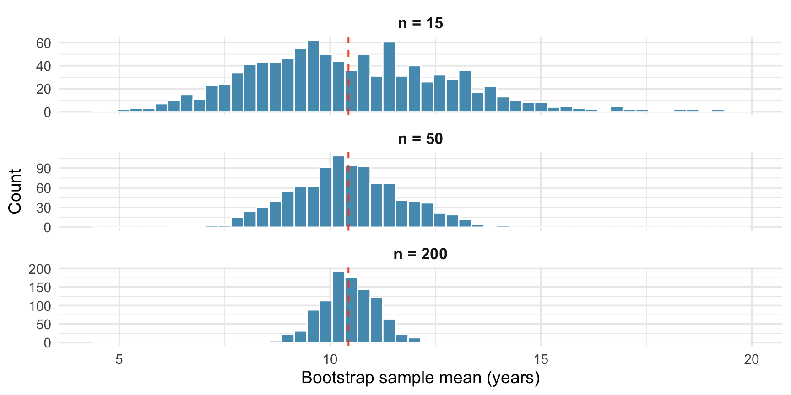

2.3 Bootstrap Confidence Intervals
In the sampling variability chapter, we saw that sample statistics vary from sample to sample. This variability is not a nuisance, it’s the key to quantifying uncertainty. In this chapter, we learn bootstrapping: a simulation-based method for constructing confidence intervals that requires no formulas and no assumptions about the shape of the population.
Key Concepts
- Construct a confidence interval for a parameter based on a point estimate and a margin of error
- Use a confidence interval to recognize plausible values of the population parameter
- Construct a confidence interval for a parameter given a point estimate and an estimate of the standard error
- Interpret (in context) what a confidence interval says about a population parameter
- Recognize that a bootstrap distribution tends to be centered at the value of the original statistic
- Use technology to create a bootstrap distribution
- Estimate the standard error of a statistic from a bootstrap distribution
- Construct a 95% confidence interval for a parameter based on a sample statistic and the standard error from a bootstrap distribution
- Construct a confidence interval based on the percentiles of a bootstrap distribution
- Explain how the width of an interval is affected by the desired level of confidence and the sample size
- Recognize when it is appropriate to construct a bootstrap confidence interval using percentiles or the standard error
The confidence interval
An interval estimate gives a range of plausible values for a population parameter, commonly formed using point estimate\(\pm\)margin of error.
Margin of error is a number that reflects the precision of the sample statistic as a point estimate for the parameter.
From our discussion about sampling distributions and bootstrap distributions, recall that sample statistics vary from sample to sample. Any time we give a point estimate for a population parameter, we want to describe that variability. This is commonly done using an interval estimate or a range of values that are plausible for the population parameter. One common form of an interval estimate is \[ \text{point estimate} \pm \text{margin of error} \] The margin of error reflects the precision of our statistic as a point estimate, and it indicates how far out we should go to obtain a range of plausible values for the population parameter.
Class Example 2.3.1: Adopting a child in the US
A survey of 1000 American adults conducted in January 2013 stated that “44% say it’s too hard to adopt a child in the US.” The survey goes on to say that “The margin of error is \(\pm 3\) percentage points with a 95% level of confidence.”
- What is the relevant sample statistic? Give appropriate notation and the value of the statistic.
- What population parameter are we estimating with this sample statistic?
- Use the margin of error to give a confidence interval for the estimate. Is 0.42 a plausible value of the population proportion? Is 0.50 a plausible value?
- If we took a sample of 100 instead, do you expect the margin of error to increase or decrease?
A confidence interval is a range of plausible values for the population parameter. A 95% confidence interval is constructed using a procedure that, when applied repeatedly to many different sample, caputers the true parameter in approximately 95% of all intervals produced
The success rate (proportion of all samples whose intervals contain the parameter) is known as the confidence level, denoted \(\alpha\).
Using the standard error, the 95% confidence interval for a sampling distribution that is relatively symmetric and bell shaped is formed using Statistic\(\pm 2 \cdot SE\).
Typically in statistics, we refer to our interval estimates as confidence intervals. A confidence interval is an interval estimate along with a confidence level, denoted \(\alpha\), that tells us how successful our intervals would be at capturing the true (but unknown) parameter if we repeated our sampling thousands of times.
To illustrate the coverage concept, imagine we could treat our 648 pennies as if they were the entire population (with true mean \(\mu \approx 10.4\) years). We then draw 25 smaller random samples of 50 pennies each and build a bootstrap CI from each one. This lets us check whether each interval captures the “true” mean — something we can never do with real data, because we don’t know the true parameter.
Each horizontal line represents a 95% CI from a different sample. Most intervals (blue) capture the true mean, but a few (red) miss it entirely. Over many samples, roughly 95% of the intervals succeed. This is the meaning of “95% confidence.”
What “95% confident” means: If we repeated the entire study many times — collecting a new sample each time and computing a new 95% confidence interval — approximately 95% of those intervals would contain the true population parameter. Any single interval either contains the parameter or it doesn’t; the 95% refers to the long-run success rate of the procedure.
Class Example 2.3.2: Interpreting confidence level
For each of the following indicate the number of confidence intervals that should capture the true population parameter.
- We repeat our sampling 30 times and calculate 95% confidence intervals each time.
- We repeat our sampling 100 times and calculate 99% confidence intervals each time.
One of the more common confidence intervals is the 95% confidence interval, and we can construct a 95% confidence interval using \[ \text{statistic} \pm 2 \cdot \text{standard error}. \]
Class Example 2.3.3: Constructing confidence intervals
For each of the following, use the information to construct a 95% confidence interval and give notation for the quantity being estimated.
- \(\overline{x}=27\) with standard error 3.2.
Interval: Notation (circle one): \(p\), \(\mu\), \(p_1 - p_2\), \(\mu_1 - \mu_2\)
- \(\widehat{p}_1-\widehat{p}_2=0.05\) with margin of error for 95% confidence of 0.02.
Interval: Notation (circle one): \(p\), \(\mu\), \(p_1 - p_2\), \(\mu_1 - \mu_2\)
Recap of precision
For a 95% confidence interval:\(MOE = 2 \cdot SE\)
Before learning about the interpretation of confidence intervals, it is important to highlight some differences between the measures of precision we have discussed thus far.
- The margin of error is the amount we add and subtract in a confidence interval.
- The standard error is the standard deviation of the sampling distribution of the statistic.
- The sample standard deviation represents the average amount a single observation in our sample is from the sample average.

Understanding confidence intervals
Confidence intervals appear all over the place. These intervals appear in research articles and academic publications, but they also appear in mainstream news sources as well. For example, during almost any election cycle, it is almost impossible to find any article about the upcoming vote that does not cite some kind of poll with an associated interval estimate.
Class Example 2.3.4: Have you ever been arrested?
According to a recent study of 7335 young people in the US, 30% had been arrested for a crime other than a traffic violation by the age of 23. Crimes included such things as vandalism, underage drinking, drunken driving, shoplifting, and drug possession.
- Is the 30%, that the study reports, a parameter or statistic?
- The margin of error is 0.01 for a 95% confidence interval. Use this information to give a range of plausible values for the parameter.
- A correctional facility network claims that the true proportion of young people who had been arrested for a crime other than a traffic violation is less than 25%. Given the margin of error in part b), if we asked all young people in the US if they have ever been arrested, is it likely that the actual proportion is less than 25%?
Interpreting a confidence interval
We can interpret a 95% confidence interval by saying that we are 95% confident (or sure) that the parameter of interest is in the interval. It is important to note that the confidence interval only refers to the population parameter, it has nothing to do with individuals in the population or for the statistics calculated from other samples.
A framework for interpreting a confidence interval is as follows (fill in the blanks with the context of the study):
We are (confidence level%) confident, that the (population parameter in words) is between (lower bound) and (upper bound).
The following are common misinterpretations of confidence intervals that you should avoid.
A 95% confidence interval contains 95% of the data in the population: This statement is not what we mean by the 95%. The 95% indicates how confident that we are that we captured the population parameter (mean, proportion, etc.) and doesn’t reflect how many individual cases are captured.We are 95% sure that the sample mean falls in the 95% confidence interval for the mean: We know the sample mean and it will always (100% of the time) fall in the confidence interval.The probability that the population parameter is in this particular 95% confidence interval is 0.95: Once an interval is constructed it either does or does not contain the population value.
Class Example 2.3.5: BPA in soup cans
To investigate BPA exposure from cans, 75 participants ate either canned soup or fresh soup for lunch for five days. On the fifth day, urinary BPA levels were measured. After a two-day break, the participants switched groups and repeated the process (matched pairs experiment). The difference in the BPA levels between the canned and fresh soup were measured for each participant, yielding a 95% confidence interval for the difference in means (canned minus fresh) of 19.6 to 25.5 micrograms/L.
- Provide an interpretation of the confidence interval in the context of the study.
- What is the margin of error for this confidence interval.
- Does this inteval suggest that BPA levels differ for canned and fresh soup? Explain.
- If the study had included 500 participants instead of 75, would you expect the confidence interval to be wider or narrower? Explain.
Class Example 2.3.6: Biomass in tropical forests
Using a sample of 4079 inventory plots, scientists give a 95% confidence interval of 9600 to 13600 tons for the mean amount of carbon per square kilometer in tropical forests.
- What is wrong with this interpretation? “We believe that 95% of tropical forests will have an average of carbon per square kilometer that is between 9600 to 13600 tons.”
- Provide a correct interpretation of the confidence interval in the context of the study.
Class Example 2.3.7: Tipping for pizza delivery
Using a sample of 24 deliveries described in “Diary of a Pizza Girl”, we find a 95% confidence interval for the mean tip given for a pizza delivery to be $4.18 to $5.90. Which of the following is a correct interpretation of this interval? Circle the correct interpretation(s).
I am 95% confident that all pizza delivery tips will be between $4.18 and $5.90.
95% of all pizza delivery tips will be between $4.18 and $5.90.
I am 95% confident that the mean pizza delivery tip for this sample will be between $4.18 and $5.90.
I am 95% confident that the mean tip for all pizza deliveries in this area will be between $4.18 and $5.90.
I am 95% confident that the confidence interval for the mean pizza delivery tip will be between $4.18 and $5.90.
The big idea behind bootstrap sampling: resampling
A point estimate is a single numerical value used as a “best guess” or approximation to estimate an unknown population parameter.
In 2011, researchers collected a sample of 648 pennies in circulation and recorded how old each penny was (current year minus year minted). The question: what is the average age of all pennies currently in circulation in the United States?
The sample mean is \(\overline{x} = 10.4\) years. This is our point estimate of the population mean \(\mu\). But how precise is this estimate? If we collected a different sample of 648 pennies, we’d get a different \(\overline{x}\). We can’t keep collecting new samples — we only have this one.
The bootstrap distribution is a collection of bootstrap statistics, each computed from a bootstrap resample. The boostrap resample is a sample of size \(n\) drawn with replacement from the original sample.
The bootstrap idea: Treat your sample as a stand-in for the population and resample from it. Each bootstrap resample is drawn with replacement from your original sample, at the same sample size \(n\). The bootstrap statistic is computed from the boostrap resample and the collection of many bootstrap statistics forms the bootstrap distribution.
Bootstrapping a sample mean
Let’s build a bootstrap confidence interval step by step.
Step 1: Collect data
Our sample of 648 pennies has a right-skewed distribution — many young pennies and a long tail of older ones:

The sample mean is \(\bar{x} = 10.4\) years. Notice the distribution is clearly not bell-shaped, it’s skewed right. Bootstrapping doesn’t care. It works regardless of the population shape.
Step 2: Resample with replacement
We draw a new sample of 648 values from the original 648, with replacement. Some pennies will appear more than once; others will be left out. Each such draw is one bootstrap resample, and the mean of that resample is a bootstrap statistic \(\bar{x}^*\).
Step 3: Repeat many times
We repeat Step 2 a large number of times — typically \(B = 1{,}000\) or more — and record the bootstrap mean \(\bar{x}^*\) each time. This gives us a bootstrap distribution.

Notice two things: (1) the bootstrap distribution is centered near the original sample mean (dashed red line), and (2) even though the penny ages are right-skewed, the bootstrap distribution of the mean is approximately bell-shaped (what statisticians call a normal shape). This is the Central Limit Theorem at work, we’ll explore it more in the next chapter.
Step 4: Find the confidence interval
The Pth percentile is the value of a quantiative variable which is greater than \(P\) percent of the data
For a 95% confidence interval, we find the middle 95% of the bootstrap distribution by taking the 2.5th and 97.5th percentiles.

The 95% bootstrap confidence interval for the mean penny age is approximately (9.7, 11.2) years.
Class Example 2.3.8: Can these be a bootstrap sample?
We have a random sample of 5 exam grades: 85, 72, 79, 97, 88. For the following state whether or not it is a possible bootstrap sample. If it is not possible, provide a correction to the sample.
- 79, 79, 97, 85, 82
- 85, 88, 97, 72
- 85, 85, 85, 85, 85
The percentile method
The approach used in the pennies example is called the percentile method for bootstrap confidence intervals.
For a \((1 - \alpha) \times 100\%\) confidence interval using the percentile method:
- Lower bound = the \((\alpha/2) \times 100\)th percentile of the bootstrap distribution
- Upper bound = the \((1 - \alpha/2) \times 100\)th percentile of the bootstrap distribution
For a 95% CI (\(\alpha = 0.05\)): use the 2.5th and 97.5th percentiles. For a 90% CI (\(\alpha = 0.10\)): use the 5th and 95th percentiles. For a 99% CI (\(\alpha = 0.01\)): use the 0.5th and 99.5th percentiles.
Class Example 2.3.9: Increasing confidence level
IF you increase the confidence level from 95% to 99%, what happens to the width of the confidence interval? Why?
Class Example 2.3.10: Average penalty minutes in the NHL
We have a random sample of the penalty minutes for \(n = 26\) players from the 2018–2019 season for the NHL team the Ottawa Senators. Some percentiles from a bootstrap distribution of 1000 sample means are shown in the table.
| 0.5% | 1.0% | 2.0% | 2.5% | 5.0% | 95.0% | 97.5% | 98.0% | 99.0% | 99.5% | |
|---|---|---|---|---|---|---|---|---|---|---|
| Percentile | 13.8 | 14.6 | 15.4 | 15.8 | 17.2 | 33.1 | 35.1 | 35.3 | 36.4 | 38.0 |
- What percentiles of the bootstrap distribution would be needed to create a 90% confidence interval?
- Create a 90% confidence interval for the average penalty minutes for a player on the Ottawa Senators in the 2018–2019 season using the percentile method.
- What percentiles of the bootstrap distribution would be needed to create a 98% confidence interval?
- Create a 98% confidence interval for the average penalty minutes for a player on the Ottawa Senators in the 2018–2019 season using the percentile method.
- Give an interpretation for one of the intervals (90% or 98%).
- Using the 90% interval, is it plausible to say that the Ottawa Senators players were given more than 34 penalty minutes on average per player? Explain.
Class Example 2.3.11: Manhattan apartment rent
The New York City housing authority wants to know about the average rent for a one-bedroom apartment in Manhattan. One of their employees goes to Craigslist and records the monthly rent for a randomly selected sample of 8 listed one-bedroom apartments in Manhattan. Her sample is given below
3150 2275 3100 2650 2925 3305 2325 5495
Use the dotplot and the table below to answer the following questions.

| 1.0% | 2.5% | 5.0% | 10.0% | 90.0% | 95.0% | 97.5% | 99.0% | |
|---|---|---|---|---|---|---|---|---|
| Percentile: | 2595.25 | 2651.85 | 2720.40 | 2788.53 | 3546.80 | 3679.48 | 3796.40 | 3913.68 |
- Write down one possible bootstrap sample from the original sample.
- Is it appropriate to use the bootstrap distribution to create a confidence interval for the average rent price in Manhattan? Justify your answer.
- Regardless of how you answered b), create and interpret a 95% confidence interval for the average rent in Manhattan using the percentile method.
The standard error method
The percentile method reads the confidence interval directly off the two tails of the bootstrap distribution. A second approach, the standard error method, instead summarizes the bootstrap distribution by its spread. It is the bridge to the formula-based confidence intervals we develop with the normal and \(t\)-distributions in Unit 3.
The standard deviation of the bootstrap distribution provides an estimate of the standard error for our statistic.
The bootstrap standard error (SE) is the standard deviation of the bootstrap distribution. When the bootstrap distribution is roughly symmetric and bell-shaped, an approximate 95% confidence interval is
\[\text{point estimate} \pm 2 \times SE.\]
The multiplier 2 comes from the normal model: about 95% of a bell-shaped distribution falls within two standard deviations of its center. (The more precise multiplier is 1.96, which we begin using in Unit 3.)
For the penny ages, the observed sample mean is 10.4 years and the bootstrap standard error, the standard deviation of the 1,000 bootstrap means, is 0.36 years. The standard error 95% confidence interval is
\[10.4 \pm 2(0.36) = (9.7, \ 11.2) \text{ years}.\]
This is essentially the same interval we found with the percentile method, as we should expect, because the bootstrap distribution of the mean penny age is nearly symmetric.
Two methods, usually one answer. For a symmetric, bell-shaped bootstrap distribution, the percentile method and the standard error method give almost identical intervals. They can disagree when the bootstrap distribution is skewed, there the percentile method, which follows the actual shape of the distribution, is the safer choice. The standard error method matters because it connects directly to the formula-based confidence intervals of Unit 3, where the standard error comes from a formula instead of from resampling.
Class Example 2.3.12: Skateboard Prices
In a random sample of 20 skateboard prices on eBay, we find the average price is $67.59. A bootstrap distribution gives a standard error of 10.9.
- Find and interpret a 95% confidence interval.
- Should a 90% confidence interval be wider or narrower than this interval?
- If we took a sample of 50 prices instead of 20, would the 95% confidence interval be wider or narrower than this interval? Explain.
What affects the width of the CI
Three factors control how wide a confidence interval is:
- Sample size (\(n\)): Larger samples → narrower intervals (more information about the population)
- Variability in the data: More spread → wider intervals (less precision)
- Confidence level: Higher confidence → wider intervals (more certainty requires a wider net)

As sample size increases, the bootstrap distribution becomes tighter around the sample mean. This is why large studies produce more precise estimates than small ones.
When does bootstrapping work?
Bootstrapping is remarkably flexible, but it does require some conditions to produce reliable intervals:
Independence: The observations in the sample should be independent of one another. This is usually satisfied when data come from a random sample or a randomized experiment.
Representative sample: The sample should be reasonably representative of the population. If the sample is biased (e.g., only volunteers), the bootstrap CI will reflect that bias.
Sufficient sample size: Very small samples (e.g., \(n < 10\)) may not contain enough information about the population’s shape. With small \(n\), the bootstrap distribution can be unreliable.
Bootstrapping does not require the population to follow a bell-shaped (normal) distribution. This is one of its greatest strengths compared to traditional formula-based methods, which often do require normality. The penny ages data are clearly right-skewed, yet the bootstrap procedure works perfectly well. The bootstrap lets the data “speak for themselves.”
Summary
- The bootstrap constructs a confidence interval by resampling with replacement from the original sample.
- The bootstrap distribution approximates the sampling distribution of the statistic.
- The percentile method uses the middle \((1 - \alpha) \times 100\%\) of the bootstrap distribution as the CI.
- The standard error method uses point estimate \(\pm\, 2 \times SE\), where the SE is the standard deviation of the bootstrap distribution; it agrees with the percentile method for symmetric distributions and bridges to the formula-based intervals of Unit 3.
- A 95% confidence interval means that if we repeated the study many times, about 95% of the resulting intervals would capture the true parameter.
- CI width depends on sample size, data variability, and confidence level.
- Bootstrap CIs work for any statistic — means, medians, proportions, differences, and more.
- Bootstrapping requires independent observations from a representative sample with sufficient sample size, but does not require the population to be bell-shaped (normal).